K - k
k- क- CLT क्लिटिक. clitic, third singular subject (exclusive); तृतीय एकवचन कर्तावाचक क्लिटिक (अनन्य). SD: grammar, व्याकरण.
kɑ का GEN सं का. genitive marker; सम्बंध कारक चिह्न. ɑ-noɑ-kɑ-mimi आनोआकामीमी. Nu’s mother. नू की मां. sɑre-kɑ-teyo सारेकातेयो. crocodile. मगरमच्छ. SD: grammar, व्याकरण. NT: ‘Ka’ is generally preceded by the argument marker ‘a-’ to mean ‘someone’. Thus ‘aka mimi’, ‘someone’s mother’ and ‘aka-jeru’, ‘Jeru tribe’. Literal meaning: someone of the Jeru community. प्रायः यह कारक चिह्न कर्ता चिह्न के बाद लगता है, जैसे ‘आ-का’ जिसका मतलब है ‘किसी का’। अतः ‘आका जेरू’ का अर्थ हुआ ‘जेरू समुदाय का सदस्य’।.
kɑbɑ1 काबा Etym: Bo; बो. N सं. a kind of creeper; एक प्रकार की लता. SD: flora, फूल-पत्ती. SEE: kɑbɑ2 ‘fruit’ ‘फल काबाhm:{2}’.Environmental
kɑbɑ2 काबा VAR: kɑːbɑ काऽबा. N सं. a kind of edible fruit; एक प्रकार का खानेवाला फल. SD: edible fruit, खाद्य फल. SEE: kɑbɑ1 ‘creeper’ ‘लता काबाhm:{1}’.Environmental
kɑbɑl काबाल Etym: North Andaman; उत्तरी अण्डमान. N सं. mangrove tree; mangrove seed; खाड़ी पेड़; खाड़ी पेड़ का बीज. SD: flora, फूल-पत्ती. NT: A small-sized tree with edible sweet fruit that is boiled before being eaten. छोटे आकार का खाड़ी पेड़ जिसके फल उबालकर खाए जाते हैं।.Environmental
kɑbereŋ काबेरेङ V क्रि. fill; भरना. ʈʰu ino-bi kɑbereŋ-kom ठू ईनोबी काबेरेङकोम. I fill water. मैं पानी भरती हूं।.
kɑbo काबो N सं. deity; देवता. SD: mythology, पौराणिक.
kɑcɑwɑ काचावा Etym: Pujjukar; पुज्जूकर. N सं. broken stones; island; ठीकरे; द्वीप. SD: natural environment, प्राकृतिक वातावरण.Environmental
kɑcil काचील MORPH: kɑc-il. V क्रि. followed someone; किसी का पीछा किया.
kɑcol काचोल V क्रि. peel wood to make arrow; तीर बनाने के लिए लकड़ी छीलना.
kɑːe काऽए N सं. a kind of black volcanic crab; एक प्रकार का काला ज्वालामुखीय केकड़ा. SD: marine, समुद्री.Environmental
kɑl काल VAR: kɑːl काऽल. N सं. a sea variety of a small crab; छोटा समुद्री केकड़ा. SD: marine, समुद्री. NT: The soup of this edible crab is supposed to cure colds. ज़ुकाम होने पर इस केकड़े को उबालकर इसका सूप औषधी के रूप में पीया जाता है।.Environmental
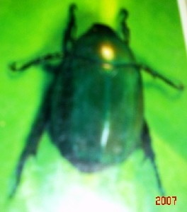 |
kɑlɑbo1 कालाबो VAR: kɑlɑːbo कालाऽबो. N सं. root-eating beetle; जड़ खाने वाला भंवरा. Coleoptera. kɑlɑbo-tɔl-cɛrel कालाबो तौल चैरेल. green beetle. हरा भृंग. SD: insect & invertebrate, कीट-पतंग एवं अरीढ़ जीव. SEE: kɑlɑbo2 ‘cockroach’ ‘तिलचट्टा कालाबोhm:{2}’.Environmental
kɑlɑbo2 कालाबो VAR: kɑlɑːbo कालाऽबो. N सं. cockroach; तिलचट्टा. SD: insect & invertebrate, कीट-पतंग एवं अरीढ़ जीव. SEE: kɑlɑbo1 ‘beetle’ ‘भंवरा कालाबोhm:{1}’.Environmental
kɑlɑm कालाम V क्रि. loitering around; wandering about; घूमना-फिरना.
|
 kɑlɑʈop1 कालाटोप VAR: kɑlɑʈɔp कालाटौप. N सं. a kind of inedible hermit crab; एक प्रकार का अखाद्य केकड़ा. SD: marine, समुद्री. SEE: kɑlɑʈop2 ‘shell; conch’ ‘सीपी; शंख कालाटोपhm:{2}’; kɑlɑʈop3 ‘snail’ ‘घोंघा कालाटोपhm:{3}’.Environmental
kɑlɑʈop1 कालाटोप VAR: kɑlɑʈɔp कालाटौप. N सं. a kind of inedible hermit crab; एक प्रकार का अखाद्य केकड़ा. SD: marine, समुद्री. SEE: kɑlɑʈop2 ‘shell; conch’ ‘सीपी; शंख कालाटोपhm:{2}’; kɑlɑʈop3 ‘snail’ ‘घोंघा कालाटोपhm:{3}’.Environmental
 kɑlɑʈop2 कालाटोप VAR: kɑlɑʈɔp कालाटौप. N सं. frog shell; conch; मेंढक की सीपी; हरमिट केकड़ा; शंख. SD: marine, समुद्री. SEE: kɑlɑʈop1 ‘crab’ ‘केकड़ा कालाटोपhm:{1}’; kɑlɑʈop3 ‘snail’ ‘घोंघा कालाटोपhm:{3}’.Environmental
kɑlɑʈop2 कालाटोप VAR: kɑlɑʈɔp कालाटौप. N सं. frog shell; conch; मेंढक की सीपी; हरमिट केकड़ा; शंख. SD: marine, समुद्री. SEE: kɑlɑʈop1 ‘crab’ ‘केकड़ा कालाटोपhm:{1}’; kɑlɑʈop3 ‘snail’ ‘घोंघा कालाटोपhm:{3}’.Environmental
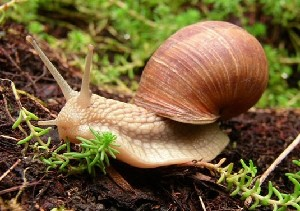 |
 kɑlɑʈop3 कालाटोप VAR: kɑlɑʈɔp कालाटौप. N सं. snail used as a bait; घोंघा जिसको चारे की तरह इस्तेमाल किया जाता है. SD: marine, समुद्री. SEE: kɑlɑʈop1 ‘crab’ ‘केकड़ा कालाटोपhm:{1}’; kɑlɑʈop2 ‘shell; conch’ ‘सीपी; शंख कालाटोपhm:{2}’.Environmental
kɑlɑʈop3 कालाटोप VAR: kɑlɑʈɔp कालाटौप. N सं. snail used as a bait; घोंघा जिसको चारे की तरह इस्तेमाल किया जाता है. SD: marine, समुद्री. SEE: kɑlɑʈop1 ‘crab’ ‘केकड़ा कालाटोपhm:{1}’; kɑlɑʈop2 ‘shell; conch’ ‘सीपी; शंख कालाटोपhm:{2}’.Environmental
kɑle काले V क्रि. roam; घूमना. ŋɑŋkɑle ङाङकाले. roam around. टहलना.
 kɑlel कालेल V क्रि. having moved; चलकर.
kɑlel कालेल V क्रि. having moved; चलकर.
kɑlemo कालेमो ADV क्रि वि. soon; fast; early; तुरन्त; झट से; जल्दी. ui-jit-kɑlemo ऊई जीत कालेमो. He ate it up fast. वह झट से खा गया।. SD: manner, रीतिवाचक.
 kɑliu1 कालीऊ Etym: Jeru; Sare; जेरू; सारे. N सं. fishing harpoon; मछली मारने का भाला. SD: tool, औज़ार, hunting & gathering, शिकार एवं संचय सम्बंधी. SEE: kɑliu2 ‘mynah’ ‘मैना कालीऊhm:{2}’.Environmental
kɑliu1 कालीऊ Etym: Jeru; Sare; जेरू; सारे. N सं. fishing harpoon; मछली मारने का भाला. SD: tool, औज़ार, hunting & gathering, शिकार एवं संचय सम्बंधी. SEE: kɑliu2 ‘mynah’ ‘मैना कालीऊhm:{2}’.Environmental
 |
 kɑliu2 कालीऊ Etym: Jeru; Sare; जेरू; सारे. N सं. myna; मैना. Gracula religiosa. SD: bird, पक्षी. NT: Known to mimic human speech. The White-headed Hill Mynah is found in Port Blair and is about 30 cm long. मानव जैसी आवाज़ निकालने वाली। सफ़ेद सिर वाली मैना जो लगभग 30 से.मी. लम्बी होती है, को पोर्ट ब्लेयर में देखा जा सकता है।. SEE: kɑliu1 ‘fishing harpoon’ ‘मछली मारने का भाला कालीऊhm:{1}’.Environmental
kɑliu2 कालीऊ Etym: Jeru; Sare; जेरू; सारे. N सं. myna; मैना. Gracula religiosa. SD: bird, पक्षी. NT: Known to mimic human speech. The White-headed Hill Mynah is found in Port Blair and is about 30 cm long. मानव जैसी आवाज़ निकालने वाली। सफ़ेद सिर वाली मैना जो लगभग 30 से.मी. लम्बी होती है, को पोर्ट ब्लेयर में देखा जा सकता है।. SEE: kɑliu1 ‘fishing harpoon’ ‘मछली मारने का भाला कालीऊhm:{1}’.Environmental
kɑliuʈʰimikʰu कालीऊठीमीखू MORPH: kɑliu-ʈʰimikʰu. N सं. Jungle Myna; जंगली मैना. SD: bird, पक्षी.Environmental
kɑmɑepʰu कामाएफू MORPH: kɑ-mɑe-pʰu. ADJ वि. fatherless; जिसका पिता नहीं हो. SD: people, लोग.
kɑːme काऽमे V क्रि. hurry up; जल्दी करना.
kɑmimipʰu कामीमीफू MORPH: kɑ-mimi-pʰu. ADJ वि. motherless; जिसकी मां नहीं हो. SD: people, लोग.
kɑmo कामो CONJ संयो. if; अगर; यदि. eke kɑmo ʈʰui ku nem एके कामो ठूई कू नेम. If I get it, I will bring it. अगर मुझे मिला तो लाऊंगा ।. SD: conjunct, संयोजक.
kɑmobe कामोबे MORPH: kɑmo-be. Etym: Bo; बो. V क्रि. exist in plenty; प्रचुर मात्रा में होना. tɛrɲie tɑrɑ kɑmo-be तैरञीए तारा कामोबे. There are lots of mosquitoes here. यहाँ पर बहुत से मच्छर हैं।.
kɑːn काऽन V क्रि. hear; सुनना.
kɑnum कानूम V क्रि. work; काम करना.
kɑɲ काञ V क्रि. touch; छूना. ʈʰu kɑɲ pʰo be ठू काञ फो बे. I will not touch it. मैं नहीं छूऊंगा।.
kɑɲɔrɔ काञौरौ V क्रि. come frequently; बार-बार आना.
kɑo काओ Etym: North Andaman; उत्तरी अण्डमान. N सं. mangrove seed; खाड़ी पेड़ के बीज. SD: flora, फूल-पत्ती.Environmental
kɑplo कापलो Etym: North Andaman; उत्तरी अण्डमान. N सं. a kind of shell; mangrove seed; एक प्रकार की सीपी; खाड़ी पेड़ के बीज. SD: marine, समुद्री. NT: This shell produces sound like a conch. शंख की तरह ध्वनि करने वाली सीपी।.Environmental
kɑpʰuc काफूच V क्रि. split/ divide into two; दो हिस्सों में बांटो.
kɑr कार V क्रि. say; voice; बोलना या कहना.
kɑrɑ कारा V क्रि. appear from the water; पानी से बाहर आना. kɑrɑ-be काराबे. Come out of sea water. समुद्र के पानी से बाहर आओ।.  roɑbi kɑrɑko रोआबी काराको. The boats came to the shore. नाव किनारे पर आ गई।.
roɑbi kɑrɑko रोआबी काराको. The boats came to the shore. नाव किनारे पर आ गई।.
kɑrɑ कारा N सं. origin; आरंभ. ɖiu-kɑrɑ डीऊकारा. sunrise. सूर्योदय. SD: natural environment, प्राकृतिक वातावरण.Environmental
kɑːrɑ काऽरा V क्रि. rise; ऊपर उठना.
 kɑrɑbe काराबे VAR: kɑrɑːwbe काराऽवबे. V क्रि. come out (out of water); ascend; बाहर आओ (पानी से); ऊपर चढ़ना.
kɑrɑbe काराबे VAR: kɑrɑːwbe काराऽवबे. V क्रि. come out (out of water); ascend; बाहर आओ (पानी से); ऊपर चढ़ना.
kɑrɑcpʰo काराच्फो MORPH: kɑrɑc-pʰo. ADV क्रि वि. far; दूर. kɑrɑicpʰobe; kɑrɑːycfo काराईचफोबे; काराऽयचफो. very far (not very near). बहुत दूर है (ज़्यादा पास नहीं). SD: space, अन्तरिक्ष.Environmental
 |
kɑrɑi काराई VAR: kɑɽɑi काड़ाई; kɑrɑːy काराऽय. N सं. black ant; काली चींटी. Paratrechina lazicomis. SD: insect & invertebrate, कीट-पतंग एवं अरीढ़ जीव.Environmental
kɑrɑŋik काराङीक N सं. seawater; seashore; समुद्र का पानी; समुद्र का किनारा. SD: natural environment, प्राकृतिक वातावरण.Environmental
kɑrɑpʰil काराफील MORPH: kɑ-rɑ-pʰil. N सं. piglet; सूअर का बच्चा. SD: animal, जानवर. NT: Piglet in the second stage of the four stages of growth. सूअर के बढ़ने की चार अवस्थाओं में से दूसरी अवस्था का सूअर।.
kɑrɑpleo कारापलेओ MORPH: kɑrɑp-leo. N सं. thin or slender waist; पतली कमर.  ʈoʈɑ rɑ kɑrɑp leo टोटा रा कारापलेओ. boy’s slender waist. लड़के की पतली कमर. SD: attribute, विशेषता.
ʈoʈɑ rɑ kɑrɑp leo टोटा रा कारापलेओ. boy’s slender waist. लड़के की पतली कमर. SD: attribute, विशेषता.
kɑrɑːšɑp काराऽशाप ADV क्रि वि. far; very far; दूर; बहुत दूर. kɑrɑːšɑp-ɑk conne काराऽशापाक चोन्ने. Go very far. बहुत दूर जाओ।. SD: space, अन्तरिक्ष.Environmental
 kɑrɑšɔ1 काराशौ VAR: kɔrɔšo कौरौशो; kɔrošu कौरोशू. N सं. necklace; bracelet; हार; बाजूबंद, पहुंची. SD: costume & adornment, आभूषण एवं श्रृंगार. SEE: kɑrɑšɔ2 ‘shell’ ‘सीपी काराशौhm:{2}’.
kɑrɑšɔ1 काराशौ VAR: kɔrɔšo कौरौशो; kɔrošu कौरोशू. N सं. necklace; bracelet; हार; बाजूबंद, पहुंची. SD: costume & adornment, आभूषण एवं श्रृंगार. SEE: kɑrɑšɔ2 ‘shell’ ‘सीपी काराशौhm:{2}’.
 kɑrɑšɔ2 काराशौ VAR: kɔrɔšo कौरौशो. N सं. a kind of white shell; एक प्रकार की सफ़ेद सीपी. SD: marine, समुद्री. NT: Striped white shell found in sand. Used for making garlands for dancing ceremonies. धारीदार सीपी जो माला बनाने में काम आती है। नाच-गाने में प्रयुक्त होती है ।. SEE: kɑrɑšɔ1 ‘necklace; bracelet’ ‘हार; बाजूबंद काराशौhm:{1}’.Environmental
kɑrɑšɔ2 काराशौ VAR: kɔrɔšo कौरौशो. N सं. a kind of white shell; एक प्रकार की सफ़ेद सीपी. SD: marine, समुद्री. NT: Striped white shell found in sand. Used for making garlands for dancing ceremonies. धारीदार सीपी जो माला बनाने में काम आती है। नाच-गाने में प्रयुक्त होती है ।. SEE: kɑrɑšɔ1 ‘necklace; bracelet’ ‘हार; बाजूबंद काराशौhm:{1}’.Environmental
 |
kɑrɑʈcɔm काराटचौम N सं. White-bellied Sea-Eagle; शिकार करने वाली बड़ी चील. SD: bird, पक्षी. NT: Eats snakes, small birds, chickens, etc. सांप, छोटी-छोटी चिड़िया और चूज़े खाने वाली विशालकाय चील।.Environmental
kɑrɑːwlu काराऽवलू N सं. a kind of long snail; एक प्रकार का लम्बा घोंघा. SD: insect & invertebrate, कीट-पतंग एवं अरीढ़ जीव.Environmental
kɑreo कारेओ N सं. a kind of edible crab; एक प्रकार का खाद्य केकड़ा. SD: marine, समुद्री. NT: This crab is found in the sea. It has thin legs and dots on the back. पतली टांगों वाला और पीठ पर धब्बों वाला समुद्री केकड़ा।.Environmental
kɑrkʰɑ कारखा MORPH: kɑr-kʰɑ. N सं. reported speech; प्रतिवेदित कथन या वाक्य. SD: grammar, व्याकरण.
kɑrtɑteŋo कारतातेङो MORPH: kɑrtɑ-teŋo. ADV क्रि वि. very far; बहुत दूर. SD: space, अन्तरिक्ष.Environmental
kɑrʈɑʈe कारटाटे V क्रि. run fast; तेज़ दौड़ना.
 kɑšɑr काशार N सं. tea; चाय. SD: edible item, खाद्य सामग्री. NT: This is a Jeru word. एक जेरो शब्द।.Environmental
kɑšɑr काशार N सं. tea; चाय. SD: edible item, खाद्य सामग्री. NT: This is a Jeru word. एक जेरो शब्द।.Environmental
kɑtɑ काता Etym: North Andaman; उत्तरी अण्डमान. N सं. a cut-piece or segment used only when it is separated from a whole; किसी चीज़ का एक कटा हुआ हिस्सा. julu-tut-kɑtɑ; julu-tʰu-kɑtɑ जूलूतूत्काता; जूलूथूकाता. a piece of cloth. एक कपड़े का हिस्सा. pʰɔʈmu-tuŋ-kɑtɑ; pʰɔʈmu-tɛr-kɑtɑ फौटमूतूङकाता; फौटमूतैरकाता. a piece of an oar. पतवार का टुकड़ा. rɛʈ-tɛr-kɑtɑ रैटतैरकाता. a piece of a bamboo. बांस का टुकड़ा. ɑʈ-tot-kɑtɑ आटतोत्काता. wood chip. लकड़ी का टुकड़ा. SD: household, घरेलू, flora, फूल-पत्ती.Environmental
kɑtɑ काता N सं. a kind of sour fruit; एक प्रकार का खट्टा फल. SD: edible fruit, खाद्य फल.Environmental
kɑtɑɲ काटाञ N सं. firefly; जुगनू. SD: insect & invertebrate, कीट-पतंग एवं अरीढ़ जीव.Environmental
kɑte काते N सं. saying; बात/ कथन. SD: psychological predicate, मनोवैज्ञानिक विधेय.
kɑterbɑyɑ कातेरबाया MORPH: kɑter-bɑyɑ. N सं. friend; companion; साथी; सखा. SD: relationship, सम्बंध.
kɑtteŋo कात्तेङो N सं. a kind of creeper; एक प्रकार की लता. SD: flora, फूल-पत्ती.Environmental
kɑʈɑ1 काटा N सं. girl who has eaten turtle; वह लड़की जिसने कछुए का मांस खाया हो. SD: people, लोग, kin term, सम्बंधी वाचक शब्दावली. SEE: kɑʈɑ2 ‘last’ ‘अंतिम काटाhm:{2}’.
kɑʈɑ2 काटा ADJ वि. last; अंतिम. SD: quantifier, परिमाण वाचक. SEE: kɑʈɑ1 ‘girl’ ‘लड़की काटाhm:{1}’.
 |
 kɑʈɑɲ काटाञ N सं. stars; तारा. SD: natural environment, प्राकृतिक वातावरण.Environmental
kɑʈɑɲ काटाञ N सं. stars; तारा. SD: natural environment, प्राकृतिक वातावरण.Environmental
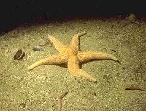 |
 kɑʈɑɲterulu काटाञ्तेररूलू MORPH: kɑʈɑɲ-ter-ulu. N सं. starfish; तारा मछली. SD: fish, मछली.Environmental
kɑʈɑɲterulu काटाञ्तेररूलू MORPH: kɑʈɑɲ-ter-ulu. N सं. starfish; तारा मछली. SD: fish, मछली.Environmental
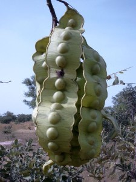 |
kɑʈɑɲulu काटाञूलू MORPH: kɑʈɑɲ-ulu. N सं. seed of Katanya tree; काटाञ पेड़ का बीज. SD: flora, फूल-पत्ती. NT: Katanya seeds are poisonous. काटाञ पेड़ के बीज ज़हरीले होते हैं।.Environmental
kɑːʈʈe काऽट्टे V क्रि. walk; चलना.
kɑːyxe खाऽयखे ADJ वि. opened; खुला. SD: attribute, विशेषता.
 keip केईप VAR: keiːp केईऽप. N सं. red coloured mixture of two coloured clays; लाल रंग का दो चिकनी मिट्टियों का मिश्रण. SD: costume & adornment, आभूषण एवं श्रृंगार. NT: Found in the North Andaman islands. Keip is mixed with turtle fat and then stored for the rainy season for use as a multipurpose medicine and for decorating the body. उत्तरी अण्डमान में पाई जाने वाली मिट्टी जिसे कछुए के तेल में मिलाकर लेप बनाया जाता है। यह लेप शरीर की सजावट के लिए या फिर कई-एक बीमारियों में औषधी के रूप में प्रयोग किया जाता है। यह लेप कई दिनों तक रखा जाता है ताकि बारिश में, जब मिट्टी दुर्लभ हो जाती है, इसका प्रयोग किया जा सके।.
keip केईप VAR: keiːp केईऽप. N सं. red coloured mixture of two coloured clays; लाल रंग का दो चिकनी मिट्टियों का मिश्रण. SD: costume & adornment, आभूषण एवं श्रृंगार. NT: Found in the North Andaman islands. Keip is mixed with turtle fat and then stored for the rainy season for use as a multipurpose medicine and for decorating the body. उत्तरी अण्डमान में पाई जाने वाली मिट्टी जिसे कछुए के तेल में मिलाकर लेप बनाया जाता है। यह लेप शरीर की सजावट के लिए या फिर कई-एक बीमारियों में औषधी के रूप में प्रयोग किया जाता है। यह लेप कई दिनों तक रखा जाता है ताकि बारिश में, जब मिट्टी दुर्लभ हो जाती है, इसका प्रयोग किया जा सके।.
keipkɑrɑkɛrep केईपकाराकैरेप MORPH: keip-kɑrɑ kɛrep. N सं. leaf beetle; पत्तों वाला भंवरा. SD: insect & invertebrate, कीट-पतंग एवं अरीढ़ जीव.Environmental
kelɑ केला VAR: teːlɑ तेऽला. N सं. a long black tick; एक लम्बा काला कीड़ा जो पशुओं के बदन पर होता है. SD: insect & invertebrate, कीट-पतंग एवं अरीढ़ जीव.Environmental
kelɑmulu केलामूलू MORPH: kelɑ-mulu. N सं. egg, of ticks or lice; जूं या लीख का अंडा. SD: life, जीवन.
kelɛptɔe केलैपतौए N सं. lime; चूना. SD: edible fruit, खाद्य फल.Environmental
kelɛtmo1 केलैत्मो VAR: kelɛʈmo केलैटमो. N सं. fresh wheat flour; ताज़ा आटा. SD: edible item, खाद्य सामग्री. SEE: kelɛtmo2 ‘soil’ ‘मिट्टी केलैत्मोhm:{2}’.Environmental
kelɛtmo2 केलैत्मो VAR: kelɛʈmo केलैटमो. N सं. soil; मिट्टी. SD: natural environment, प्राकृतिक वातावरण. SEE: kelɛtmo1 ‘fresh wheat flour’ ‘ताजा आटा केलैत्मोhm:{1}’.Environmental
keliu केलीऊ VAR: keːliw केऽलीव. N सं. whirlpool; भंवर. SD: natural environment, प्राकृतिक वातावरण.Environmental
 kenɑp1 केनाप VAR: kenɑb केनाब; kɛnɑp कैनाप. N सं. crab legs; केकड़े के पैर. SD: body part term, शारीरिक अंग शब्दावली. SEE: kenɑp2 ‘finger’ ‘उंगली केनापhm:{2}’.
kenɑp1 केनाप VAR: kenɑb केनाब; kɛnɑp कैनाप. N सं. crab legs; केकड़े के पैर. SD: body part term, शारीरिक अंग शब्दावली. SEE: kenɑp2 ‘finger’ ‘उंगली केनापhm:{2}’.
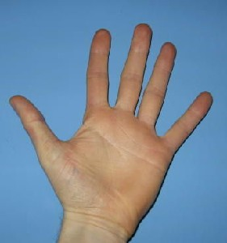 |
 kenɑp2 केनाप VAR: kenɑb केनाब; kɛnɑp कैनाप. N सं. finger; उंगली. nɔŋ-kɛnɑp नौङकैनाप. their fingers. उनकी उंगलियां.
kenɑp2 केनाप VAR: kenɑb केनाब; kɛnɑp कैनाप. N सं. finger; उंगली. nɔŋ-kɛnɑp नौङकैनाप. their fingers. उनकी उंगलियां.  ʈʰ-oŋ-kenɑp ठोङकेनाप. my fingers. मेरी उंगलियां. ɖu-nɔŋ-kenɑp डूनौङकेनाप. his finger. उसकी उंगली. SD: body part term, शारीरिक अंग शब्दावली. SEE: kenɑp1 ‘crab legs’ ‘केकड़े के पैर केनापhm:{1}’.
ʈʰ-oŋ-kenɑp ठोङकेनाप. my fingers. मेरी उंगलियां. ɖu-nɔŋ-kenɑp डूनौङकेनाप. his finger. उसकी उंगली. SD: body part term, शारीरिक अंग शब्दावली. SEE: kenɑp1 ‘crab legs’ ‘केकड़े के पैर केनापhm:{1}’.
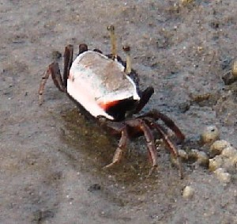 |
 keo केओ VAR: keoː केओऽ; kɛo कैओ; kɛːo कैऽओ. N सं. crab; केकड़ा. keo trɑ pʰoŋ केओ त्रा फोङ. hole of crab. केकड़े का बिल.
keo केओ VAR: keoː केओऽ; kɛo कैओ; kɛːo कैऽओ. N सं. crab; केकड़ा. keo trɑ pʰoŋ केओ त्रा फोङ. hole of crab. केकड़े का बिल.  sɑre be jeoɑmo kɛo bituŋ cɔŋɔm सारे बे जेओआमो कैओ बीतूङ चौङौम. If there was a high tide you would have had lots of crab. अगर ज्वार आता तो तुमको बहुत केकड़े मिलते।. SD: marine, समुद्री. NT: This crab is edible. बहुप्रचलित खाद्य केकड़ा।.Environmental
sɑre be jeoɑmo kɛo bituŋ cɔŋɔm सारे बे जेओआमो कैओ बीतूङ चौङौम. If there was a high tide you would have had lots of crab. अगर ज्वार आता तो तुमको बहुत केकड़े मिलते।. SD: marine, समुद्री. NT: This crab is edible. बहुप्रचलित खाद्य केकड़ा।.Environmental
keːp केऽप N सं. summit; मीनार; शिखर. SD: natural environment, प्राकृतिक वातावरण.Environmental
kerɑ1 केरा VAR: kerɑː केराऽ. N सं. bay, of shallow water; छिछले जल की खाड़ी. SD: natural environment, प्राकृतिक वातावरण. SEE: kerɑ2 ‘waist high water’ ‘कमर तक पानी केराhm:{2}’.Environmental
kerɑ2 केरा N सं. waist high water; कमर तक पानी. SD: natural environment, प्राकृतिक वातावरण. SEE: kerɑ1 ‘bay, of shallow water’ ‘छिछले जल की खाड़ी केराhm:{1}’.Environmental
 kerɑle केराले N सं. middle of a log of a boat; नाव के बीच का हिस्सा. SD: boat related, नाव सम्बंधी, hunting & gathering, शिकार एवं संचय सम्बंधी.Environmental
kerɑle केराले N सं. middle of a log of a boat; नाव के बीच का हिस्सा. SD: boat related, नाव सम्बंधी, hunting & gathering, शिकार एवं संचय सम्बंधी.Environmental
keːyɑʈʈɔ कैऽयाट्टौ N सं. a variety of freshwater crab; मीठे जल का केकड़ा. SD: marine, समुद्री.Environmental
kɛle कैले V क्रि. stay; ठहरना. ʈʰo-kɛle-pʰo-b-e ठो कैले फो बे. I will not stay. मैं नहीं ठहरूंगा।.
kɛlo कैलो DEIXIS डीक्सीस. all-around; चारों ओर. ʈʰ-ot ɲo tot kɛlo be ठोत ञो तोत कैलो बे. There are trees all-around the hill. पहाड़ के चारों ओर पेड़ हैं।. SD: space, अन्तरिक्ष.Environmental
kɛloɲ कैलोञ V-REFL निज क्रि. turn sideways or upside down; पल्टी खाना. ɛn-kɛlon ऐन्कैलोन. turn sideways (self). ख़ुद-ब-ख़ुद पलटना.
kɛmo कैमो N सं. a kind of tree that bears edible fruits; एक प्रकार का पेड़ जिसके फल खाए जाते हैं. SD: flora, फूल-पत्ती.Environmental
kɛmɔ कैमौ N सं. a kind of small bitter tasting fruit; एक प्रकार का छोटा कड़वा आंवला फल. SD: edible fruit, खाद्य फल.Environmental
kɛn कैन VAR: kino कीनो; kino bɑle कीनो बाले. N सं. a kind of creeper; एक प्रकार की लता. SD: flora, फूल-पत्ती. NT: This creeper is roasted and then used for curing headaches. लता को भूनकर और पीसकर दवाई बनाई जाती है जो सिर दर्द भगाने के काम आती है।.Environmental
 kɛnmo कैन्मो N सं. thread; धागा. SD: household, घरेलू. NT: These are rolls of phɑrɑko (a creeper) thread. फाराको लता के धागे।.
kɛnmo कैन्मो N सं. thread; धागा. SD: household, घरेलू. NT: These are rolls of phɑrɑko (a creeper) thread. फाराको लता के धागे।.
kɛp कैप Etym: Bo; बो. N सं. evergreen waterhole; पानी/कुआं का सदाबहार गड्ढा. SD: natural environment, प्राकृतिक वातावरण.Environmental
kɛr1 कैर VAR: keːr केऽर. N सं. neck; गर्दन. ŋ-ɑkɛr ङाकैर. your neck. तुम्हारी गर्दन. SD: body part term, शारीरिक अंग शब्दावली. SEE: kɛr2 ‘snore’ ‘खर्राटे लेना कैरhm:{2}’.
kɛr2 कैर VAR: keːr केऽर. V क्रि. snore; खर्राटे लेना. o-kɛr-ɔm ओकैरौम. He snores. खर्राटे मारता है।. SEE: kɛr1 ‘neck’ ‘गर्दन कैरhm:{1}’.
kɛrep कैरेप ADJ वि. bitter; कड़वा. SD: attribute, विशेषता.
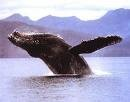 |
kɛrɛŋ1 कैरैङ VAR: kɛreŋ कैरेङ. N सं. Bol fish; whale; बोल मछली; एक प्रकार की ह्वेल. SD: fish, मछली. SEE: kɛrɛŋ2 ‘shark’ ‘शार्क; ह्वेल कैरैङhm:{2}’.Environmental
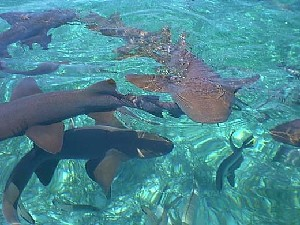 |
kɛrɛŋ2 कैरैङ VAR: kɛreŋ कैरेङ. N सं. a kind of shark; एक प्रकार की शार्क. SD: fish, मछली. SEE: kɛrɛŋ1 ‘fish; whale’ ‘मछली; ह्वेल कैरैङhm:{1}’.Environmental
 kɛʈɛp कैटैप N सं. a place near Diglipur; दीगलीपुर के नज़दीक एक स्थान. SD: proper noun, व्यक्तिवाचक संज्ञा. NT: This place is at the north of the Jarawa Reserve. An ancient burial ground for those who die as a result of choking on bones. जारवा जंगल के उत्तर में स्थित वह स्थान जहां उन मृत व्यक्तियों को दफ़नाया जाता है जो गले में हड्डी के अटकने से मरते हैं।.
kɛʈɛp कैटैप N सं. a place near Diglipur; दीगलीपुर के नज़दीक एक स्थान. SD: proper noun, व्यक्तिवाचक संज्ञा. NT: This place is at the north of the Jarawa Reserve. An ancient burial ground for those who die as a result of choking on bones. जारवा जंगल के उत्तर में स्थित वह स्थान जहां उन मृत व्यक्तियों को दफ़नाया जाता है जो गले में हड्डी के अटकने से मरते हैं।.
 kɛʈmo1 कैटमो N सं. bowstring made of the Pharako creeper; फाराको बेल से बनी धनुष की डोर. SD: hunting & gathering, शिकार एवं संचय सम्बंधी, tool, औज़ार. SEE: kɛʈmo2 ‘thread’ ‘धागा कैटमोhm:{2}’.Environmental
kɛʈmo1 कैटमो N सं. bowstring made of the Pharako creeper; फाराको बेल से बनी धनुष की डोर. SD: hunting & gathering, शिकार एवं संचय सम्बंधी, tool, औज़ार. SEE: kɛʈmo2 ‘thread’ ‘धागा कैटमोhm:{2}’.Environmental
kɛʈmo2 कैटमो N सं. thread made from the bark of the Pharako creeper; फाराको पेड़ की छाल से बना धागा. SD: hunting & gathering, शिकार एवं संचय सम्बंधी. SEE: kɛʈmo1 ‘bowstring’ ‘धनुष की डोर कैटमोhm:{1}’.Environmental
kɛʈo कैटो N सं. a kind of sea cricket, 11 cm long; एक प्रकार का समुद्री झींगुर, 11 से.मी. लम्बा. SD: insect & invertebrate, कीट-पतंग एवं अरीढ़ जीव.Environmental
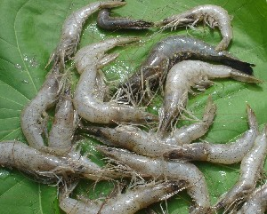 |
 kɛʈʰo कैठो VAR: kɛːʈʰo कैऽठो; kɛːyɑʈʈɔ कैऽयाट्टौ. N सं. freshwater prawn; मीठे पानी का झींगा. SD: marine, समुद्री.Environmental
kɛʈʰo कैठो VAR: kɛːʈʰo कैऽठो; kɛːyɑʈʈɔ कैऽयाट्टौ. N सं. freshwater prawn; मीठे पानी का झींगा. SD: marine, समुद्री.Environmental
kɛwo कैवो N सं. a kind of red crab; एक प्रकार का लाल केकड़ा. SD: marine, समुद्री.Environmental
kiːbir कीऽबीर N सं. a kind of tree; एक प्रकार का पेड़. SD: flora, फूल-पत्ती.Environmental
 kijire कीजीरे VAR: kʰijire खीजीरे. V क्रि. wander; play; roam around; घूमना; भटकना; खेल.
kijire कीजीरे VAR: kʰijire खीजीरे. V क्रि. wander; play; roam around; घूमना; भटकना; खेल.
N सं. one who roams around; इधर-उधर आवारागर्दी करने वाला. ŋo-kijire-k-ɔm ङोकीजीरेकौम. You have been wandering. तुम भटक रहे हो।.
kim कीम VAR: kʰim खीम. N सं. Shankar fish; शंकर मछली. SD: fish, मछली. NT: This fish is like the ‘tɑrɑbol’, but it has a bad odor and is not edible. ‘ताराबोल’ मछली जैसी, लेकिन बहुत बदबूदार और अखाद्य।.Environmental
 |
 ko को VAR: kɔw कौव. N सं. bow; धनुष. peje iso ko tɑ ɑ jirɑke iso ko nɔl be पेजे ईसो को ता आ जीराके ईसो को नौल बे. Peje’s bow is better than that of Jirake. पेजे का धनुष जीराके के धनुष से अच्छा है।. SD: hunting & gathering, शिकार एवं संचय सम्बंधी.Environmental
ko को VAR: kɔw कौव. N सं. bow; धनुष. peje iso ko tɑ ɑ jirɑke iso ko nɔl be पेजे ईसो को ता आ जीराके ईसो को नौल बे. Peje’s bow is better than that of Jirake. पेजे का धनुष जीराके के धनुष से अच्छा है।. SD: hunting & gathering, शिकार एवं संचय सम्बंधी.Environmental
koːbɑlo कोऽबालो VAR: kobɑlo कोबालो. N सं. bowstring; धनुष की डोर. SD: hunting & gathering, शिकार एवं संचय सम्बंधी.Environmental
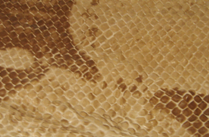 |
 kobo कोबो VAR: kɔbo कौबो. Etym: Jeru; जेरू. N सं. skin; त्वचा.
kobo कोबो VAR: kɔbo कौबो. Etym: Jeru; जेरू. N सं. skin; त्वचा.  ʈʰ-ot-kɔbɔ ठोत्कौबौ. my skin. मेरी चमड़ी. motkɔbo मोतकौबो. our skin. हमारी खाल. SD: body part term, शारीरिक अंग शब्दावली.
ʈʰ-ot-kɔbɔ ठोत्कौबौ. my skin. मेरी चमड़ी. motkɔbo मोतकौबो. our skin. हमारी खाल. SD: body part term, शारीरिक अंग शब्दावली.
 kobu1 कोबू N सं. a kind of tree; एक प्रकार का पेड़. SD: flora, फूल-पत्ती. NT: The leaves of this tree are used for roofing and making umbrellas. The stem is used as thread for stitching. कोबू के पत्ते छाता व छप्पर बनाने के और तना धागा बनाने के काम आता है।. SEE: kobu2 ‘umbrella’ ‘छतरी; छाता कोबूhm:{2}’.Environmental
kobu1 कोबू N सं. a kind of tree; एक प्रकार का पेड़. SD: flora, फूल-पत्ती. NT: The leaves of this tree are used for roofing and making umbrellas. The stem is used as thread for stitching. कोबू के पत्ते छाता व छप्पर बनाने के और तना धागा बनाने के काम आता है।. SEE: kobu2 ‘umbrella’ ‘छतरी; छाता कोबूhm:{2}’.Environmental
 kobu2 कोबू VAR: kɔbu कौबू; kɔbɔ कौबौ; kɔwbu कौवबू. N सं. umbrella; छतरी; छाता. SD: household, घरेलू. SEE: kobu1 ‘tree’ ‘पेड़ कोबूhm:{1}’.
kobu2 कोबू VAR: kɔbu कौबू; kɔbɔ कौबौ; kɔwbu कौवबू. N सं. umbrella; छतरी; छाता. SD: household, घरेलू. SEE: kobu1 ‘tree’ ‘पेड़ कोबूhm:{1}’.
kocɑ कोचा N सं. a kind of fruit; a kind of creeper; एक प्रकार का फल; एक प्रकार की लता या बेल. SD: edible fruit, खाद्य फल, flora, फूल-पत्ती. NT: This fruit is used for making jungle wine. जंगली/ देसी शराब बनाने में काम आने वाला फल और बेलें।.Environmental
kocɑrɑ कोचारा CASE का. benefactive case; अपादान कारक. SD: grammar, व्याकरण.
kocɑtei1 कोचातेई MORPH: kocɑ-tei. Etym: Pujjukar; पुज्जूकर. N सं. bone; हड्डी. SD: body part term, शारीरिक अंग शब्दावली. SEE: kocɑtei2 ‘wine’ ‘शराब कोचातेईhm:{2}’.
kocɑtei2 कोचातेई MORPH: kocɑ-tei. Etym: Pujjukar; पुज्जूकर. N सं. wine; शराब. ŋo-kocɑ-tei-bi-kʰu-m ङोकोचातेईबीखूम. Don’t drink wine. शराब मत पीयो।. SD: edible item, खाद्य सामग्री. SEE: kocɑtei1 ‘bone’ ‘हड्डी कोचातेईhm:{1}’.Environmental
kocɑteikʰuierlelɑ कोचातेईखूईएरलेला MORPH: kocɑ-tei-kʰui-erlelɑ. ADJ वि. intoxicated after drinking kocatei; कोचातेई पीने के बाद होने वाली मदहोशी. SD: state, अवस्था.
kocop कोचोप V क्रि. tie; बांधना.
 |
koɖbelo कोडबेलो N सं. Banded Sea Krait, non poisonous; एक प्रकार का विषहीन समुद्री सांप. SD: reptile, रेंगने वाले जंतु.Environmental
 koetoʈɔŋ कोएतोटौङ MORPH: koeto-ʈɔŋ. N सं. jackfruit tree; कटहल का पेड़. SD: flora, फूल-पत्ती. NT: Used for making boats. नाव बनाने में काम आता है।.Environmental
koetoʈɔŋ कोएतोटौङ MORPH: koeto-ʈɔŋ. N सं. jackfruit tree; कटहल का पेड़. SD: flora, फूल-पत्ती. NT: Used for making boats. नाव बनाने में काम आता है।.Environmental
koɛr कोऐर N सं. stone; पत्थर. SD: natural environment, प्राकृतिक वातावरण.Environmental
 koɛto कोऐतो N सं. wild thorny bush; जंगली कंटीली झाड़ी. SD: flora, फूल-पत्ती.Environmental
koɛto कोऐतो N सं. wild thorny bush; जंगली कंटीली झाड़ी. SD: flora, फूल-पत्ती.Environmental
 |
 koi कोई VAR: kɔi कौई; kɔe कौए; kol कोल. N सं. a kind of Andaman woodpecker; एक प्रकार का अण्डमानी कठफोड़वा. Dryocopus hodgei. SD: bird, पक्षी. NT: It knocks on branches and trunks to force out worms to eat. कठफोड़वा अपनी चोंच से ठोंक-ठोंक कर तने और शाखाओं में से कीड़े बाहर निकालता है ताकि उन्हें खा सके।.Environmental
koi कोई VAR: kɔi कौई; kɔe कौए; kol कोल. N सं. a kind of Andaman woodpecker; एक प्रकार का अण्डमानी कठफोड़वा. Dryocopus hodgei. SD: bird, पक्षी. NT: It knocks on branches and trunks to force out worms to eat. कठफोड़वा अपनी चोंच से ठोंक-ठोंक कर तने और शाखाओं में से कीड़े बाहर निकालता है ताकि उन्हें खा सके।.Environmental
koic कोईच ADV क्रि वि. again; फिर. koil ʈʰɑ melibom koic कोईल ठा मेलीबोम कोईच. I will come back here again later. मैं बाद में यहाँ फिर लौट कर आऊंगा।. SD: time, समय.
koiɛleo कोईऐलेओ MORPH: koi-ɛleo. N सं. Fulvous-breasted Woodpecker; एक प्रकार का कठफोड़वा. SD: bird, पक्षी.Environmental
koil कोईल ADV क्रि वि. later; बाद में. koil ʈʰɑ melibom koic कोईल ठा मेलीबोम कोईच. I will come back here again later. मैं बाद में यहाँ फिर लौटकर आऊंगा।. SD: time, समय.
koin कोईन VAR: kon कोन. V क्रि. wake up; जागना. tʰire koɲe थीरे कोञे. Woken up child. जागा हुआ बच्चा.
kokɑ कोका ADV क्रि वि. resumed; दुबारा शुरू हुआ. SD: attribute, विशेषता.
kokɑcolik कोकाचोलीक MORPH: kokɑ-colik. V क्रि. give final touches; अंतिम फेरबदल करना.
kokolotbɑrɑc कोकोलोत्बाराच MORPH: kokolot-bɑrɑc. N सं. cervical vertebra; सिर के पीछे की हड्डी. SD: body part term, शारीरिक अंग शब्दावली.
kol कोल N सं. a small edible crab; एक प्रकार का छोटा खाद्य केकड़ा. SD: marine, समुद्री.Environmental
koːl कोऽल DEIXIS डीक्सीस. there; वहां. SD: space, अन्तरिक्ष.Environmental
kolɑy कोलाय N सं. a kind of sea shell; एक प्रकार की समुद्री सीपी. SD: marine, समुद्री.Environmental
 |
kole ceo कोले चेओ N सं. Silver Sweetlips fish; एक प्रकार की मछली जिसके होंठ का रंग चांदी जैसा होता है. SD: fish, मछली.Environmental
kolɛrɛ कोलैरै V क्रि. smear; लीपना.
-koliŋ -कोलीङ SUF प्र. subjunctive mood; संभाव्य प्रत्यय. tujulul ŋutʰubitʰikɑ ŋɑ ciʈʰibi ole-koliŋ-e तूजूलूल ङूथूबीथीका ङा चीठीबी ओलेकोलीङे. If you had left earlier you would have seen the letter. यदि तुम पहले निकलते या आते तो तुमने ख़त देख लिया होता।. SD: grammar, व्याकरण. NT: postverbal. उपसर्ग।.
 |
kolɔ कोलौ N सं. a type of shell (edible); Mango shell; एक प्रकार का शंख. SD: marine, समुद्री.Environmental
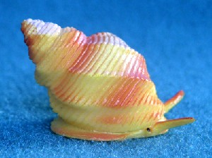 |
kolɔʈɔp कोलौटौप N सं. seasnail; समुद्री घोंघा. SD: marine, समुद्री.Environmental
komɑr कोमार Etym: North Andaman; उत्तरी अण्डमान. N सं. a kind of sea fish; एक प्रकार की समुद्री मछली. SD: fish, मछली.Environmental
komɑršir कोमारशीर MORPH: komɑr-šir. N सं. smell of the Komar fish; कोमार मछली की गंध. SD: attribute, विशेषता.
kon कोन Etym: Bo. VAR: konciɑ कोन्चीआ. Etym: Jeru. V क्रि. wake up; get up; जागना; उठना. kon be कोन बे. Get up. उठो।.
 konɑpʰole1 कोनाफोले MORPH: konɑ-pʰole. VAR: konnɑ-pʰole कोन्नाफोले. N सं. a kind of white clay; एक प्रकार की सफ़ेद मिट्टी. SD: medicine, औषधी. NT: Smeared on the body especially by females. It is also used as a painkiller. स्त्रियां इससे अपना शरीर लेपती हैं। दर्दनाशक।. SEE: konɑpʰole2 ‘fruit’ ‘फल कोनाफोलेhm:{2}’.Environmental
konɑpʰole1 कोनाफोले MORPH: konɑ-pʰole. VAR: konnɑ-pʰole कोन्नाफोले. N सं. a kind of white clay; एक प्रकार की सफ़ेद मिट्टी. SD: medicine, औषधी. NT: Smeared on the body especially by females. It is also used as a painkiller. स्त्रियां इससे अपना शरीर लेपती हैं। दर्दनाशक।. SEE: konɑpʰole2 ‘fruit’ ‘फल कोनाफोलेhm:{2}’.Environmental
 konɑpʰole2 कोनाफोले VAR: konnɑpʰole कोन्नाफोले. N सं. a kind of fruit; एक प्रकार का फल. SD: edible fruit, खाद्य फल. SEE: konɑpʰole1 ‘clay (white)’ ‘मिट्टी (सफ़ेद) कोनाफोलेhm:{1}’.Environmental
konɑpʰole2 कोनाफोले VAR: konnɑpʰole कोन्नाफोले. N सं. a kind of fruit; एक प्रकार का फल. SD: edible fruit, खाद्य फल. SEE: konɑpʰole1 ‘clay (white)’ ‘मिट्टी (सफ़ेद) कोनाफोलेhm:{1}’.Environmental
konɑːsuːbi कोनाऽसूऽबी MORPH: konɑː-suːbi. VAR: konɑː-šubi कोनाऽशूबी. N सं. a kind of wild snake; जंगली सांप. SD: reptile, रेंगने वाले जंतु, medicine, औषधी. NT: It is believed that the bite of this snake serves as a pain reliever. ऐसा माना जाता है कि इस सांप के काटे से दर्द ठीक हो जाता है ।.Environmental
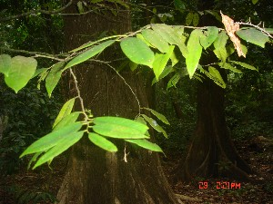 |
 konɑtɛc कोनातैच MORPH: konɑ-tɛc. N सं. Tendu leaves; तेंदू पत्ता. SD: flora, फूल-पत्ती.Environmental
konɑtɛc कोनातैच MORPH: konɑ-tɛc. N सं. Tendu leaves; तेंदू पत्ता. SD: flora, फूल-पत्ती.Environmental
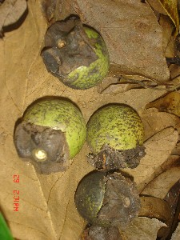 |
konɑtɔtco कोनातौतचो MORPH: konɑ-tɔt-co. N सं. kona fruit; कोना फल. SD: edible fruit, खाद्य फल. NT: Sweet fruit. एक मीठा फल।.Environmental
konɑʈɔŋ कोनाटौङ MORPH: konɑ-ʈɔŋ. N सं. Tendu tree; तेंदू पेड़. SD: flora, फूल-पत्ती.Environmental
konbom कोनबोम MORPH: kon-b-om. V-INTR अ क्रि. get up; wake up; जागना. ʈʰɛr kʰilu bim ɑ ʈʰo konbom ठैर खीलू बीम आ ठो कोनबोम. Do not wake me up, I will get up myself. मुझे मत जगाना, मैं अपने-आप जाग जाऊंगा।.
 konnɑ कोन्ना VAR: konɑ कोना. N सं. Tendu fruit; तेंदू फल.
konnɑ कोन्ना VAR: konɑ कोना. N सं. Tendu fruit; तेंदू फल.  tʰirebi konnɑ lišokom थीरेबी कोन्ना लीशोकोम. The children finished all the Tendu fruit. बच्चों ने सारा तेंदू फल ख़त्म कर दिया।. SD: edible fruit, खाद्य फल. NT: Common fruit of the Andamans. Found in Mayabandar (North Andaman). अण्डमान द्वीप का बहुत प्रचलित फल। उत्तरी अण्डमान में मायाबंदर में पाया जाता है।.Environmental
tʰirebi konnɑ lišokom थीरेबी कोन्ना लीशोकोम. The children finished all the Tendu fruit. बच्चों ने सारा तेंदू फल ख़त्म कर दिया।. SD: edible fruit, खाद्य फल. NT: Common fruit of the Andamans. Found in Mayabandar (North Andaman). अण्डमान द्वीप का बहुत प्रचलित फल। उत्तरी अण्डमान में मायाबंदर में पाया जाता है।.Environmental
konto कोन्तो N सं. hand; हाथ. o-konto-bi-o-kom ओकोन्तोबीओकोम. He is chewing his hand. वह अपने हाथ को चबा रहा है।. SD: body part term, शारीरिक अंग शब्दावली.
koɲyo कोञ्यो V क्रि. glimpse; appear; झलक दिखना; प्रकट होना. cokbi-bi-koɲyo चोक्बी बी कोञ्यो. A turtle was just seen. कछुए को अभी-अभी देखा गया।.
kopɑl कोपाल DEIXIS डीक्सीस. inside; में. ʈɑmʈɑm roɑ-kopɑl konɑ-bi jiko टामटाम रोआ कोपाल कोनाबी जीको. Tamtam ate Tendu fruit in a canoe. टमटम ने डोंगी में तेंदू फल खाया।. SD: space, अन्तरिक्ष.Environmental
kor कोर N सं. a medium sized shell; मध्यम आकार की सीपी. SD: marine, समुद्री. NT: It is used as a cup for the purpose of drinking. इसका प्रयोग प्याले की तरह किया जाता है।.Environmental
korɑ कोरा V क्रि. catch fish by net; जाल से मछली पकड़ना. u-oco-tɑ korɑboko ऊ ओचो ता कोराबोको. He caught fish in the net. उसने जाल से मछली पकड़ी।.
korɑi कोराई VAR: korɑːe कोराऽए; kɔːrɑːy कौऽराऽय. N सं. a harmful sand crab; खतरनाक बालुई केकड़ा. SD: marine, समुद्री. NT: This small crab has eyes that shine like radium and it is inedible. इसकी आंखें रेडियम की तरह रात को भी चमकती हैं। अखाद्य।.Environmental
 korbo कोरबो VAR: kɔrbo कौरबो. N सं. a sour fruit; एक प्रकार का खट्टा फल. SD: edible fruit, खाद्य फल.Environmental
korbo कोरबो VAR: kɔrbo कौरबो. N सं. a sour fruit; एक प्रकार का खट्टा फल. SD: edible fruit, खाद्य फल.Environmental
koːro कोऽरो N सं. pebbles; कंकड़. SD: marine, समुद्री.Environmental
 korobito कोरोबीतो VAR: kɔrɔbito कौरौबीतो; korobitʰo कोरोबीथो; kɔrɔbitʰo कौरौबीथो. N सं. centipede; कनखजूरा; ईल्ली. SD: insect & invertebrate, कीट-पतंग एवं अरीढ़ जीव.Environmental
korobito कोरोबीतो VAR: kɔrɔbito कौरौबीतो; korobitʰo कोरोबीथो; kɔrɔbitʰo कौरौबीथो. N सं. centipede; कनखजूरा; ईल्ली. SD: insect & invertebrate, कीट-पतंग एवं अरीढ़ जीव.Environmental
korobitotɑmimi कोरोबीतोतामीमी MORPH: korobito-tɑ-mimi. N सं. a kind of scorpion, lit. mother of centipede; एक प्रकार का बिच्छू, शाब्दिक अर्थः कनखजूरे की मां. SD: insect & invertebrate, कीट-पतंग एवं अरीढ़ जीव.Environmental
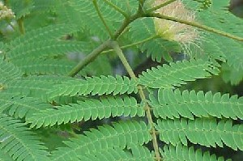 |
korobitotɛc कोरोबीतोतैच N सं. a kind of leaf; एक प्रकार का पत्ता. SD: flora, फूल-पत्ती.Environmental
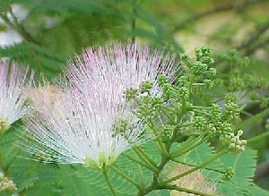 |
korobitoʈɔlo कोरोबीतोटौलो MORPH: korobito-ʈɔlo. N सं. a kind of flower; एक प्रकार का फूल. Albizia julibrissi. SD: flora, फूल-पत्ती.Environmental
korobo कोरोबो N सं. dry place; सूखी जगह. SD: natural environment, प्राकृतिक वातावरण. SEE: ʈʰitotkɔrɔbo ‘dried soil or land’ ‘सूखी मिट्टी या ज़मीन ठीतोतकौरौबो ’.Environmental
korɔmolɛbik कोरौमोलैबीक N सं. wife of the first man; पहले पुरुष की पत्नी. SD: kin term, सम्बंधी वाचक शब्दावली.
košir कोशीर N सं. mangrove tree with red leaves; लाल पत्तों वाला खाड़ी पेड़. SD: flora, फूल-पत्ती.Environmental
kot कोत N सं. cane leaf used for making houses; बेंत का पत्ता जो घर की छत बनाने में प्रयोग होता है. SD: flora, फूल-पत्ती.Environmental
koːt कोऽत N सं. cough; खांसी. SD: illness, रोग.
 |
kotɑtɔtiɔ कोतातौतीऔ MORPH: kotɑtɔ-tiɔ. N सं. iguana (lizard); गोई. SD: reptile, रेंगने वाले जंतु. NT: Eats dead animals. मरे हुए जानवर खाने वाली भीमकाय छिपकली।.Environmental
koːtbe कोऽतबे V क्रि. cough; खांसना.
kotɛšil कोतैशील MORPH: ko-tɛšil. ADV क्रि वि. having brought the boat to the side; नाव को किनारे पर लाकर. SD: activity & event, कार्यकलाप.
koːtmɑrɑːy कोऽतमाराऽय N सं. white ant; सफ़ेद चींटी. SD: insect & invertebrate, कीट-पतंग एवं अरीढ़ जीव.Environmental
kotɲo कोत्ञो MORPH: kot-ɲo. N सं. house made of mud or clay; मिट्टी का घर. SD: habitat, रहन-सहन.
kototsolok कोतोतसोलोक MORPH: ko-tot-solok. VAR: ko-tot-šolok को-तोत-शोलोक. N सं. loop, of the bow; धनुष का फंदा. SD: hunting & gathering, शिकार एवं संचय सम्बंधी.Environmental
kotrɑ कोत्रा VAR: kʰotrɑ खोत्रा. N सं. stomach; belly; पेट. ŋe-kotrɑ ङेकोत्रा. your stomach. तुम्हारा पेट. SD: body part term, शारीरिक अंग शब्दावली.
kotrɑkɔ कोत्राकौ MORPH: kotrɑ-kɔ. DEIXIS डीक्सीस. inside (with contact, very proximate); अंदर (छुए हुए, बहुत नज़दीक). kʰider kotrɑkɔ dum be खीदेर कोत्राकौ दूम बे. There are worms inside the coconut. नारियल के अंदर कीड़े हैं।. SD: space, अन्तरिक्ष.Environmental
kotrɑl कोत्राल MORPH: kotrɑ-l. DEIXIS डीक्सीस. inside (without contact, proximate); अंदर (बिना छुए हुए, नज़दीक). ɲo kotrɑ-l me beno b-ɔm ञो कोत्राल मे बेनो बौम. We sleep inside the house. हम घर के अंदर सोते हैं।. SD: space, अन्तरिक्ष.Environmental
kottɑrɑl कोत्ताराल VAR: kottrɑl कोत्तराल. DEIXIS डीक्सीस. in; inside; में; अंदर. ɲo kottrɑ-l mo beno b-ɔm ञो कोत्त्राल मो बेनो बौम. We sleep inside the house. हम घर के अंदर सोते हैं।. SD: space, अन्तरिक्ष.Environmental
kotterno कोत्तेरनो MORPH: kot-terno. V क्रि. stitch leaves to make house; पत्तियों को सिलकर घर बनाना.
 koʈmɑrɑe1 कोटमाराए N सं. anthill; चींटियों की बांबी. SD: insect & invertebrate, कीट-पतंग एवं अरीढ़ जीव. SEE: koʈmɑrɑe2 ‘insect’ ‘कीड़ा कोटमाराएhm:{2}’.Environmental
koʈmɑrɑe1 कोटमाराए N सं. anthill; चींटियों की बांबी. SD: insect & invertebrate, कीट-पतंग एवं अरीढ़ जीव. SEE: koʈmɑrɑe2 ‘insect’ ‘कीड़ा कोटमाराएhm:{2}’.Environmental
koʈmɑrɑe2 कोटमाराए N सं. a wood-eating insect; एक लकड़ी खानेवाला कीड़ा. SD: insect & invertebrate, कीट-पतंग एवं अरीढ़ जीव. SEE: koʈmɑrɑe1 ‘anthill’ ‘बांबी, चींटियों की कोटमाराएhm:{1}’.Environmental
 |
 koʈʰorɛmo कोठोरैमो N सं. a kind of small bowl; एक प्रकार का छोटा कटोरा.
koʈʰorɛmo कोठोरैमो N सं. a kind of small bowl; एक प्रकार का छोटा कटोरा.  u-išo-koʈʰorɛmo ऊईशोकोठोरैमो. his/her bowl. उसका बर्तन. SD: household, घरेलू.
u-išo-koʈʰorɛmo ऊईशोकोठोरैमो. his/her bowl. उसका बर्तन. SD: household, घरेलू.
koyop कोयोप ADJ वि. impotent; नामर्द. SD: attribute, विशेषता.
kɔ कौ N सं. black ticks found on dogs; कुत्तों पर पाई जाने वाली काली जूं. SD: insect & invertebrate, कीट-पतंग एवं अरीढ़ जीव.Environmental
kɔbo1 कौबो Etym: Jeru; जेरू. N सं. coconut husk; नारियल का छिलका. SD: flora, फूल-पत्ती. SEE: otkɔbo ‘bark; skin’ ‘छाल; चमड़ी औत्कौबो ’; kɔbo2 ‘palm leaf’ ‘ताड़ पत्र कौबोhm:{2}’.Environmental
kɔbo2 कौबो Etym: Jeru; जेरू. N सं. palm leaf; ताड़ पत्र. SD: flora, फूल-पत्ती. SEE: kɔbo1 ‘coconut husk’ ‘नारियल का छिलका कौबोhm:{1}’.Environmental
kɔbu कौबू VAR: kɔbɔ कौबौ. N सं. plates made up of silai patti; सिलाई पट्टी से बनी हुई तश्तरी. SD: household, घरेलू. NT: This plate is used for keeping food. खाना परोसने व सहेजकर रखने में प्रयुक्त होती है।.
kɔc1 कौच ADV क्रि वि. too; also; भी; साथ ही. SD: quantifier, परिमाण वाचक. SEE: kɔc2 ‘with’ ‘के साथ कौचhm:{2}’.
kɔc2 कौच COMITATIVE सं वा. with; के साथ. joe kɔc meo u-nno-bo जोए कौच मेओ ऊन्नो बो. Joe went back with Meo (returned). जो मियो के साथ लौटा।. SD: grammar, व्याकरण. SEE: kɔc1 ‘too; also’ ‘भी; साथ ही कौचhm:{1}’.
kɔcɑː कौचाऽ N सं. cycle; चक्र; चक्का; घेरा. SD: geometric shape, ज्यामितीय आकार.
kɔːcɑ कौऽचा N सं. a kind of creeper; एक प्रकार की लता. SD: flora, फूल-पत्ती.Environmental
kɔel कौएल ADV क्रि वि. later; बाद में. SD: time, समय.
kɔemo कौएमो N सं. lice; जूं. SD: insect & invertebrate, कीट-पतंग एवं अरीढ़ जीव.Environmental
 kɔetoulu कौएतोऊलू MORPH: kɔeto-ulu. N सं. jackfruit seed; कटहल का बीज. SD: edible item, खाद्य सामग्री.Environmental
kɔetoulu कौएतोऊलू MORPH: kɔeto-ulu. N सं. jackfruit seed; कटहल का बीज. SD: edible item, खाद्य सामग्री.Environmental
kɔetɔ कौएतौ VAR: kɔeʈɔ कौएटौ. N सं. jackfruit; कटहल. SD: edible fruit, खाद्य फल.Environmental
kɔetɔtɔtco कौएतौतौतचो MORPH: kɔe-tɔtɔtco. N सं. fruit of koeto; कोएतो का फल. SD: edible fruit, खाद्य फल.Environmental
 kɔfɔ कौफौ VAR: kɔpʰo कौफो; kɔpʰu कौफू. N सं. banana; केला. SD: edible fruit, खाद्य फल.Environmental
kɔfɔ कौफौ VAR: kɔpʰo कौफो; kɔpʰu कौफू. N सं. banana; केला. SD: edible fruit, खाद्य फल.Environmental
kɔfɔʈoʈɔ कौफौटोटौ MORPH: kɔfɔ-ʈoʈɔ. N सं. cluster of bananas; केलों का गुच्छा. SD: edible fruit, खाद्य फल.Environmental
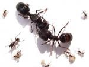 |
kɔimo कौईमो VAR: kɔimɔ कौईमौ. N सं. ordinary ant; साधारण चींटी. Pheidologeton diversus. SD: insect & invertebrate, कीट-पतंग एवं अरीढ़ जीव.Environmental
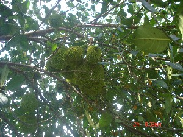 |
kɔito कौईतो VAR: kɔːyɑto कौऽयातो. N सं. a kind of tree; दमदम पेड़. SD: flora, फूल-पत्ती.Environmental
 |
kɔitoco कौईतोचो MORPH: kɔito-co. N सं. fruit, of the koito tree; कौईतो पेड़ का फल. SD: edible fruit, खाद्य फल.Environmental
kɔkɔʈɔːp कौकौटौऽप N सं. lower jaw of dugong; डूगोंग का निचला जबड़ा. SD: body part term, शारीरिक अंग शब्दावली.
kɔl कौल N सं. Shankar fish; शंकर मछली. SD: fish, मछली. NT: Found in the deep sea. गहरे समुद्र में पाई जाती है।.Environmental
kɔlme कौलमे DEIXIS डीक्सीस. there; वहां. SD: space, अन्तरिक्ष.Environmental
kɔlɔ1 कौलौ VAR: kɔlʷo कौल्वो; kɔːlɔ कौऽलौ. N सं. bamboo; बांस. SD: flora, फूल-पत्ती. SEE: kɔlɔ2 ‘ghost’ ‘भूत कौलौhm:{2}’; kɔlɔ3 ‘kite’ ‘चील कौलौhm:{3}’; kɔlɔ4 ‘proper name’ ‘व्यक्तिविशेष नाम कौलौhm:{4}’.Environmental
kɔlɔ2 कौलौ VAR: kɔlo कौलो. N सं. ghost; भूत. SD: supernatural, अलौकिक. SEE: kɔlɔ1 ‘bamboo’ ‘बांस कौलौhm:{1}’; kɔlɔ3 ‘kite’ ‘चील कौलौhm:{3}’; kɔlɔ4 ‘proper name’ ‘व्यक्तिविशेष नाम कौलौhm:{4}’.Environmental
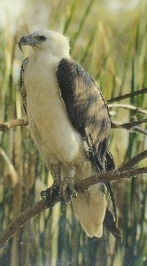 |
 kɔlɔ3 कौलौ VAR: kɔlo कौलो; kɔllɔ कौल्लौ. N सं. white kite; ब्राह्मणी सफ़ेद चील. kɔlɔ kʰɛleʈmo-bi-tɛbolɔ कौलौ खैलेटमोबीतैबोलौ. The eagle flew away taking a chapati (Indian bread). चील रोटी लेकर उड़ गई।. SD: bird, पक्षी. NT: Eats fish. Lays eggs in the Gurjan tree. सफ़ेद चील जो गर्जन पेड़ में अण्डे देती है और मछली खाती है।. SEE: kɔlɔ1 ‘bamboo’ ‘बांस कौलौhm:{1}’; kɔlɔ2 ‘ghost’ ‘भूत कौलौhm:{2}’; kɔlɔ4 ‘proper name’ ‘व्यक्तिविशेष नाम कौलौhm:{4}’.Environmental
kɔlɔ3 कौलौ VAR: kɔlo कौलो; kɔllɔ कौल्लौ. N सं. white kite; ब्राह्मणी सफ़ेद चील. kɔlɔ kʰɛleʈmo-bi-tɛbolɔ कौलौ खैलेटमोबीतैबोलौ. The eagle flew away taking a chapati (Indian bread). चील रोटी लेकर उड़ गई।. SD: bird, पक्षी. NT: Eats fish. Lays eggs in the Gurjan tree. सफ़ेद चील जो गर्जन पेड़ में अण्डे देती है और मछली खाती है।. SEE: kɔlɔ1 ‘bamboo’ ‘बांस कौलौhm:{1}’; kɔlɔ2 ‘ghost’ ‘भूत कौलौhm:{2}’; kɔlɔ4 ‘proper name’ ‘व्यक्तिविशेष नाम कौलौhm:{4}’.Environmental
 kɔlɔ4 कौलौ VAR: kɔlo कौलो. N सं. proper name; व्यक्तिविशेष नाम. SD: proper noun, व्यक्तिवाचक संज्ञा. SEE: kɔlɔ1 ‘bamboo’ ‘बांस कौलौhm:{1}’; kɔlɔ2 ‘ghost’ ‘भूत कौलौhm:{2}’; kɔlɔ3 ‘kite’ ‘चील कौलौhm:{3}’.
kɔlɔ4 कौलौ VAR: kɔlo कौलो. N सं. proper name; व्यक्तिविशेष नाम. SD: proper noun, व्यक्तिवाचक संज्ञा. SEE: kɔlɔ1 ‘bamboo’ ‘बांस कौलौhm:{1}’; kɔlɔ2 ‘ghost’ ‘भूत कौलौhm:{2}’; kɔlɔ3 ‘kite’ ‘चील कौलौhm:{3}’.
kɔlɔko कौलौको V क्रि. having grown up; बड़ा होकर. ɑthire kɔlɔko nuŋtɑʈɔbɔbe आथीरे कौलौको नूङताटौबौबे. Children trouble you when they grow up. बच्चे बड़े होकर तुम्हें तंग करेंगे।.
kɔlɔt कौलौत ADJ वि. new; नया. di ʈʰutʰu kɔlɔt-b-o दी ठूथू कौलौत्बो. He has just come to me. वह अभी मेरे पास आया है।. SD: attribute, विशेषता.
kɔlɔt कौलौत N सं. marriage; शादी. ebɔi-kɔlɔt एबौईकौलौत. newly married bride. नई-नवेली दुल्हन. SD: ritual, रीति-रिवाज़.
 kɔme कौमे NEG नका. no; do not know; नहीं; नहीं जानता. SD: grammar, व्याकरण.
kɔme कौमे NEG नका. no; do not know; नहीं; नहीं जानता. SD: grammar, व्याकरण.
 kɔnmo कौनमो VAR: kɔnmɔ कौनमौ. N सं. a kind of wild potato; rope-like white tuber; एक प्रकार का जंगली आलू; रस्सी जैसा सफ़ेद कन्द. SD: cooking & food, खाना-पीना.
kɔnmo कौनमो VAR: kɔnmɔ कौनमौ. N सं. a kind of wild potato; rope-like white tuber; एक प्रकार का जंगली आलू; रस्सी जैसा सफ़ेद कन्द. SD: cooking & food, खाना-पीना.
kɔɲorɑ कौञोरा VAR: kɔɲɔrɑ कौञौरा. N सं. waves, small, in a calm sea; शांत समुद्र की छोटी लहरें. SD: natural environment, प्राकृतिक वातावरण.Environmental
kɔpo कौपो VAR: kɑːkɔ काऽकौ. N सं. banana tree; केले का पेड़. SD: flora, फूल-पत्ती.Environmental
kɔpʰɔt कौफौत N सं. a big red fish; एक प्रकार की लाल रंग की मछली. SD: fish, मछली.Environmental
kɔpʰutɛic कौफूतैईच MORPH: kɔpʰu-tɛic. N सं. banana leaf; केले का पत्ता. SD: flora, फूल-पत्ती.Environmental
kɔr कौर VAR: kɔːr कौऽर. N सं. cowry; कौड़ी; एक समुद्री घोंघा. SD: marine, समुद्री.Environmental
kɔrɑšu कौराशू VAR: koroːso कोरोऽसो. N सं. garland; माला. SD: costume & adornment, आभूषण एवं श्रृंगार.
kɔrbocobɑcmo कौरबोचोबाच्मो VAR: kɔrbocɑbɑmo कौरबोचाबामो. N सं. a kind of insect; एक प्रकार का कीड़ा. SD: insect & invertebrate, कीट-पतंग एवं अरीढ़ जीव. NT: This insect is active in the evenings. ऐसा कीड़ा जो प्रायः रात को ही निकलता है।.Environmental
kɔrerʈo कौरेरटो N सं. a kind of game; एक प्रकार का खेल. SD: sports, खेल-कूद. NT: This game is played between two players (mainly by women) with 6-7 seashells. यह खेल, (खासकर महिलाओं द्वारा), 6 या 7 कौड़ियों से दो खिलाड़ियों के बीच खेला जाता है ।.
 kɔro1 कौरो VAR: kɔrɔ कौरौ. N सं. long-nosed parrotfish; बड़ी नाक वाली तोता मछली. SD: fish, मछली. NT: A small red-green fish. लाल-हरे रंग की छोटी मछली।. SEE: kɔro2 ‘shell’ ‘सीपी कौरोhm:{2}’.Environmental
kɔro1 कौरो VAR: kɔrɔ कौरौ. N सं. long-nosed parrotfish; बड़ी नाक वाली तोता मछली. SD: fish, मछली. NT: A small red-green fish. लाल-हरे रंग की छोटी मछली।. SEE: kɔro2 ‘shell’ ‘सीपी कौरोhm:{2}’.Environmental
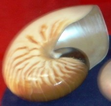 |
 kɔro2 कौरो N सं. nautilus shell; एक प्रकार की सीपी. SD: marine, समुद्री. SEE: kɔro1 ‘fish’ ‘मछली कौरोhm:{1}’.Environmental
kɔro2 कौरो N सं. nautilus shell; एक प्रकार की सीपी. SD: marine, समुद्री. SEE: kɔro1 ‘fish’ ‘मछली कौरोhm:{1}’.Environmental
kɔroleːw कौरोलेऽव N सं. torch; मशाल. SD: fire, अग्नि.Environmental
kɔrop कौरोप V क्रि. pause; रुकना.
kɔrɔ कौरौ N सं. green cane leaf; कच्चा बेंत का पत्ता. SD: flora, फूल-पत्ती.Environmental
kɔrɔbito कौरौबीतो N सं. a big poisonous scorpion; एक बड़ा विषैला बिच्छू. SD: insect & invertebrate, कीट-पतंग एवं अरीढ़ जीव.Environmental
kɔrɔːbɔ कौरौऽबौ ADJ वि. stiff dried; कड़क सूखा. SD: attribute, विशेषता.
 kɔrɔiɲ1 कौरौईञ VAR: kɔːrɔɲ कौऽरौञ; kɔrɔin कौरौईन. Etym: Jeru; जेरू. N सं. dugong; डूगोंग; पानी सूअर. kɔrɔiɲ sɑre tɑrɑ-tɑl meo-pʰoŋ ʈʰibikɲo-k-ɔ-m कौरौईञ सारे ताराताल मेओफोङ ठीबीक्ञोकौम. dugong lives in the stone caves of the sea. डूगोंग समुद्र में पत्थर की गुफा में रहता है।. SD: marine, समुद्री. NT: The dugong has a highly developed sense of hearing so one has to be quiet while hunting. डूगोंग की श्रवण शक्ति बहुत तेज़ होती है अतः इसका शिकार करते समय खास शान्ति रखनी पड़ती है।. SEE: ɑrɑin ‘dugong’ ‘डूगोंग; पानी सूअर आराईन ’; kɔrɔiɲ2 ‘garjan tree’ ‘गर्जन पेड़ कौरौईञhm:{2}’.Environmental
kɔrɔiɲ1 कौरौईञ VAR: kɔːrɔɲ कौऽरौञ; kɔrɔin कौरौईन. Etym: Jeru; जेरू. N सं. dugong; डूगोंग; पानी सूअर. kɔrɔiɲ sɑre tɑrɑ-tɑl meo-pʰoŋ ʈʰibikɲo-k-ɔ-m कौरौईञ सारे ताराताल मेओफोङ ठीबीक्ञोकौम. dugong lives in the stone caves of the sea. डूगोंग समुद्र में पत्थर की गुफा में रहता है।. SD: marine, समुद्री. NT: The dugong has a highly developed sense of hearing so one has to be quiet while hunting. डूगोंग की श्रवण शक्ति बहुत तेज़ होती है अतः इसका शिकार करते समय खास शान्ति रखनी पड़ती है।. SEE: ɑrɑin ‘dugong’ ‘डूगोंग; पानी सूअर आराईन ’; kɔrɔiɲ2 ‘garjan tree’ ‘गर्जन पेड़ कौरौईञhm:{2}’.Environmental
 kɔrɔiɲ2 कौरौईञ VAR: kɔːrɔɲ कौऽरौञ; kɔrɔin कौरौईन. Etym: Jeru; जेरू. VAR: koːrɑn कोऽरान. N सं. Gurjan tree; गर्जन पेड़. Dipterocarpus incanus. SD: flora, फूल-पत्ती. SEE: kɔrɔiɲ1 ‘dugong’ ‘डूगोंग; पानी सूअर कौरौईञhm:{1}’.Environmental
kɔrɔiɲ2 कौरौईञ VAR: kɔːrɔɲ कौऽरौञ; kɔrɔin कौरौईन. Etym: Jeru; जेरू. VAR: koːrɑn कोऽरान. N सं. Gurjan tree; गर्जन पेड़. Dipterocarpus incanus. SD: flora, फूल-पत्ती. SEE: kɔrɔiɲ1 ‘dugong’ ‘डूगोंग; पानी सूअर कौरौईञhm:{1}’.Environmental
kɔrɔiɲɑʈɔe कौरौईञाटौए MORPH: kɔrɔiɲ-ɑʈɔe. N सं. bone of the dugong; डूगोंग की हड्डी. SD: body part term, शारीरिक अंग शब्दावली, medicine, औषधी. NT: The bone of the dugong is powdered, mixed with water and used as a medicine for burns on the tongue and for pimples. डूगोंग की हड्डी का चूरा पानी में मिलाकर जीभ के छालों और मुंहासों पर लगाया जाता है।.Environmental
kɔrɔiɲbikɑrɑ कौरौईञ्बीकारा MORPH: kɔrɔiɲ-bi-kɑrɑ. N सं. feeding ground, of the dugong; डूगोंग के चरने की जगह. SD: natural environment, प्राकृतिक वातावरण.Environmental
kɔrɔiɲɔrɔ कौरौईञौरौ MORPH: kɔrɔiɲ-ɔrɔ. N सं. flower and fruit of a gurjan tree (brownish colour); गर्जन पेड़ का फल व फूल (भूरे रंग के). SD: flora, फूल-पत्ती. NT: The blooming of this flower is associated with the hunting period in the sea when the fat content in turtles and fish is high. ऐसा माना जाता है कि इसके फूलते ही समुद्री जीवों में वसा की मात्रा अधिक पाई जाती है। गर्जन पेड़ के फूलते ही समुद्र में शिकार करना लाभदायक माना जाता है।.Environmental
kɔrɔiɲpʰɔʈ कौरौईञफौट MORPH: kɔrɔiɲ-pʰɔʈ. N सं. Gurjan flower; गर्जन फूल. SD: flora, फूल-पत्ती. NT: This flower blooms in very hot weather. कड़कती गर्मी में खिलने वाला गर्जन फूल।.Environmental
kɔrɔkʰo कौरौखो N सं. a kind of fish that has red stripes on the tail; एक प्रकार की मछली जिसकी पूंछ पर लाल धारियां होती हैं. SD: fish, मछली.Environmental
kɔrɔɲone कौरौञोने MORPH: kɔrɔɲ-one. N सं. oil, of dugong; डूगोंग का तेल. SD: hunting & gathering, शिकार एवं संचय सम्बंधी, edible item, खाद्य सामग्री.Environmental
kɔrɔɲtɑrɑkobu कौरौञताराकोबू MORPH: kɔrɔɲ-tɑrɑ-kobu. N सं. hind fin, of the dugong; डूगोंग का पिछला पंख. SD: body part term, शारीरिक अंग शब्दावली.
 |
kɔrɔp कौरौप VAR: krop क्रोप; kɔrɔb कौरौब. N सं. fiddler crab, a small crab; एक प्रकार का छोटा केकड़ा. SD: marine, समुद्री. NT: Inedible and found in different colours. कई रंगों में मिलने वाला अखाद्य केकड़ा।.Environmental
kɔrɔšɔšɔt कौरौशौशौत MORPH: kɔrɔšɔ-šɔt. V क्रि. make necklace, of shells; सीपियों का हार बनाना.
kɔːrɔsuk कौऽरौसूक N सं. beads used to make garland; माला बनाने में प्रयुक्त एक मोती या दाना. SD: costume & adornment, आभूषण एवं श्रृंगार.
kɔt1 कौत VAR: kɔːt कौऽत. V क्रि. cough; खांसना. kɔt-b-ɔm कौत्बौम. He coughs. वह खांसता है।. SEE: kɔt2 ‘roof’ ‘छत कौतhm:{2}’; kɔt3 ‘soil; statue of deity’ ‘मिट्टी; देवी की मूर्ति कौतhm:{3}’; kɔt4 ‘tree’ ‘पेड़ कौतhm:{4}’.
kɔt2 कौत VAR: kɔːt कौऽत. N सं. roof of the house; घर की छत. SD: household, घरेलू. SEE: kɔt1 ‘cough’ ‘खांसना कौतhm:{1}’; kɔt3 ‘soil; statue of deity’ ‘मिट्टी; देवी की मूर्ति कौतhm:{3}’; kɔt4 ‘tree’ ‘पेड़ कौतhm:{4}’.
kɔt3 कौत VAR: kɔʈ कौट. N सं. a kind of very fine clay used for making an idol; deity made of clay (female form); एक प्रकार की महीन मिट्टी जिससे मूर्ति बनाई जाती है; मिट्टी की बनी हुई देवी की मूर्ति. SD: natural environment, प्राकृतिक वातावरण, supernatural, अलौकिक. NT: A mythological figure, mother of all the Great Andamanese. मिथक देवी, अण्डमानियों की जननी।. SEE: kɔt1 ‘cough’ ‘खांसना कौतhm:{1}’; kɔt2 ‘roof’ ‘छत कौतhm:{2}’; kɔt4 ‘tree’ ‘पेड़ कौतhm:{4}’.Environmental
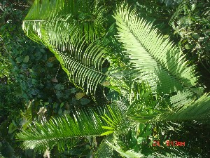 |
kɔt4 कौत VAR: kɔːt कौऽत. N सं. palm tree; ताड़ का पेड़. SD: flora, फूल-पत्ती. SEE: kɔt1 ‘cough’ ‘खांसना कौतhm:{1}’; kɔt2 ‘roof’ ‘छत कौतhm:{2}’; kɔt3 ‘soil; statue of deity’ ‘मिट्टी; देवी की मूर्ति कौतhm:{3}’.Environmental
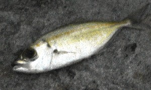 |
 kɔtʰorɔ कौथोरौ VAR: kɔʈʰoroɑ कौठोरोआ; kɔtoro कौतोरो. N सं. tuna fish; टोपी मछली. SD: fish, मछली.Environmental
kɔtʰorɔ कौथोरौ VAR: kɔʈʰoroɑ कौठोरोआ; kɔtoro कौतोरो. N सं. tuna fish; टोपी मछली. SD: fish, मछली.Environmental
kɔtpɛc कौत्पैच N सं. horn; सींग. SD: body part term, शारीरिक अंग शब्दावली.
kɔtrɑyiye कौतरायीये MORPH: kɔtrɑy-iye. N सं. stomach pain; पेट दर्द. SD: illness, रोग.
kɔttɛc कौत्तैच MORPH: kɔt-tɛc. N सं. cane leaf; बेंत का पत्ता. SD: flora, फूल-पत्ती.Environmental
kɔttɛrno कौत्तैरनो MORPH: kɔt-tɛr-no. N सं. stitched leaves (to make house); सिले हुए पत्ते (घर बनाने के लिये). SD: flora, फूल-पत्ती, tool, औज़ार.Environmental
 kɔʈbelo कौटबेलो MORPH: kɔʈ-belo. VAR: kɔʈ-belu कौटबेलू; kɔʈbeːlo कौटबेऽलो. N सं. a white-black sea snake; सफ़ेद काला रंग का समुद्री सांप. SD: reptile, रेंगने वाले जंतु.Environmental
kɔʈbelo कौटबेलो MORPH: kɔʈ-belo. VAR: kɔʈ-belu कौटबेलू; kɔʈbeːlo कौटबेऽलो. N सं. a white-black sea snake; सफ़ेद काला रंग का समुद्री सांप. SD: reptile, रेंगने वाले जंतु.Environmental
kɔʈbikʰibir कौटबीखीबीर MORPH: kɔʈ-bi-kʰibir. N सं. sweet smell of the earth; मिट्टी की सोंधी सुगंध. SD: natural environment, प्राकृतिक वातावरण.Environmental
kɔʈʰbo कौठबो V क्रि. remember; yearn for someone; याद करना; किसी के लिए ललसा होना. ʈʰu-ŋe-koʈʰbo ठूङेकोठबो. I was missing you. मैं तुम्हें याद कर रहा था।.
kɔʈcɛɔ कौटचैऔ MORPH: kɔʈ-cɛɔ. N सं. instrument, to cut trees; दाओ, पेड़ काटने का औज़ार. SD: tool, औज़ार.
kɔʈec कौटेच N सं. earthen pot; मिट्टी का बर्तन. SD: cooking & food, खाना-पीना.
kɔʈliʈʰiu कौटलीठीऊ MORPH: kɔʈ-liʈʰiu. N सं. shade of soil; मिट्टी का रंग. SD: attribute, विशेषता.
kɔʈmɔrɑːy कौटमौराऽय MORPH: kɔʈ-mɔrɑːy. N सं. white ant; सफ़ेद चींटी. SD: insect & invertebrate, कीट-पतंग एवं अरीढ़ जीव.Environmental
kɔʈʰoi कौठोई N सं. trunk (nose); सूंड. SD: body part term, शारीरिक अंग शब्दावली.
kɔʈoʈco कौटोटचो MORPH: kɔʈoʈ-co. N सं. mound of white ants; दीमक का ढेर. SD: insect & invertebrate, कीट-पतंग एवं अरीढ़ जीव.Environmental
kɔʈpʰɛc कौट्फैच MORPH: kɔʈ-pʰɛc. VAR: kɔʈ-ɸec कौटफेच; kɔʈfeːc कौटफेऽच. N सं. earthen pot; हंडिया; मिट्टी का बर्तन. SD: cooking & food, खाना-पीना.
kɔːʈʈɑ कौऽट्टा N सं. Shankar fish; शंकर मछली. SD: fish, मछली.Environmental
kɔːʈʈoco कौऽट्टोचो MORPH: kɔːʈʈo-co. N सं. white anthill; सफ़ेद चींटियों की बांबी. SD: insect & invertebrate, कीट-पतंग एवं अरीढ़ जीव.Environmental
kui कूई Etym: Onge; ओंगे. N सं. pig; सूअर. SD: animal, जानवर.
kuklɑrberiŋɑ कूक्लारबेरिङा MORPH: kuk-l-ɑr-beriŋɑ. Etym: Bea; बेया. ADJ वि. happy; ख़ुश. SD: attribute, विशेषता.
kulimu कूलीमू N सं. wasp; बर्र. SD: insect & invertebrate, कीट-पतंग एवं अरीढ़ जीव.Environmental
kuluɽe कूलूड़े N सं. drops of water from the rising tide hitting the shore; सागर में उठते ज्वार की फुहार. SD: marine, समुद्री.Environmental
kuni कूनी MORPH: kuni. V क्रि. sing; गाना. jo-bi-kuni-me जोबीकूनीमे. Sing a song. गाना गाओ।.
kursiː कूरसीऽ Etym: Hindi; हिन्दी. N सं. chair; कुरसी. SD: household, घरेलू.
 kuruɖe कूरूडे VAR: koruɖe कोरूडे. N सं. thunder/ thundering; गरजन. ʈɑo kuruɖe टाओ कूरूडे. The clouds are thundering. बादल गरज रहे हैं।. SD: natural environment, प्राकृतिक वातावरण.Environmental
kuruɖe कूरूडे VAR: koruɖe कोरूडे. N सं. thunder/ thundering; गरजन. ʈɑo kuruɖe टाओ कूरूडे. The clouds are thundering. बादल गरज रहे हैं।. SD: natural environment, प्राकृतिक वातावरण.Environmental